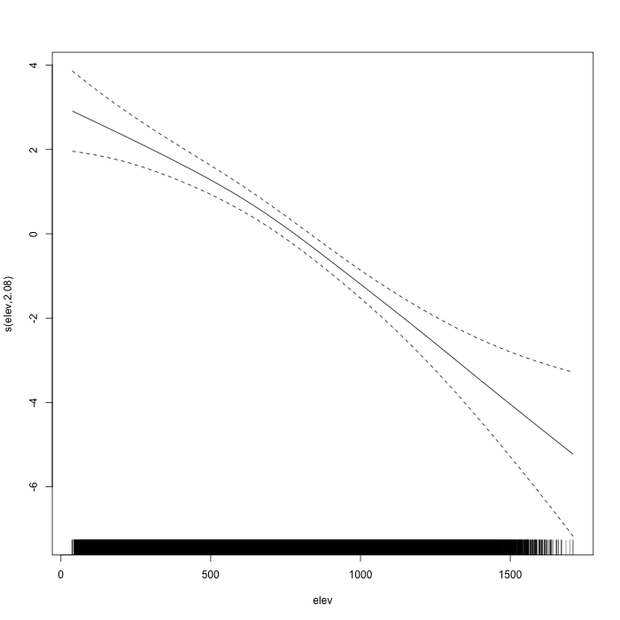
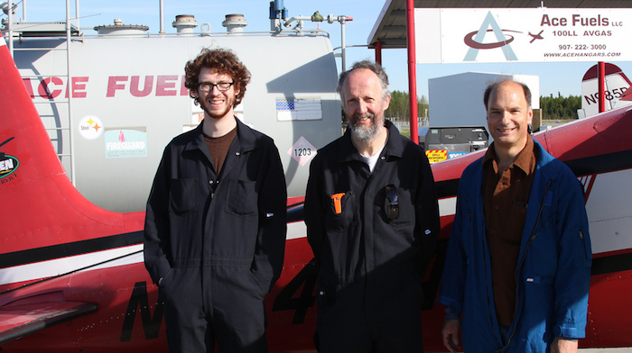
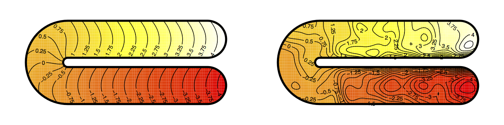

Recent advances in spatial modelling of distance sampling surveys
David L Miller (@millerdl)
CREEM, University of St Andrews
converged.yt
Ecological Society of America Annual Conference
Baltimore, Maryland
10 August 2015


Density surface models
(Spatial models that account for detectability)
(This talk is a rough guide)
(Go to
converged.yt, “Talks”
for more information and references)
\(\geq 2\)-stage models

Hedley and Buckland (2004). Miller et al (2013).
Detection functions
- “Fit to the histogram”
- Model \(\mathbb{P} \left[ \text{animal detected } \vert \text{ animal at distance } y\right] = g(y;\boldsymbol{\theta})\)
- Calculate the average probability of detection:
\[
\hat{p}_i = \frac{1}{w} \int_0^w g(y; \boldsymbol{\hat{\theta}}) \text{d}y
\]
- Horvitz-Thompson-type estimators:
\[
\hat{N} = \sum_{i=1}^n \frac{s_i}{\hat{p}_i}
\]
(where \(s_i\) are group/cluster sizes)
Distance sampling (extensions)
- Covariates that affect detectability (Marques et al, 2007)
- Perception bias (\(g(0)<1\)) (Burt et al, 2014)
- Availability bias (Winiarski et al, 2013; Borchers et al, 2013)
- Detection function formulations (Miller and Thomas, 2015)
- Measurement error (Marques, 2004)
Figure from Marques et al (2007)
Case study - black bears in AK
- Area of 26,482 km2 (~area of VT or MA)
- Double observer surveys using Piper Super Cubs
- 1238, 35km transects, 2001-2003
1238 transects

Spatially explicit models
Spatial model
If we are modelling counts:
\[
\mathbb{E}(\hat{n}_j) = A_j\exp \left\{ \beta_0 + \sum_k f_k(z_{jk}) \right\}
\]
- \(\hat{n}_j\) has some count distribution (Horvtiz-Thompson estimate)
- \(A_j\) is area of segment
- \(f_k\) are smooth functions (splines \(\Rightarrow f_k(x)=\sum_l \beta_l b_l(x)\))
- \(f_k\) can just be fixed effects \(\Rightarrow\) GLM
- Add-in random effects, correlation structures \(\Rightarrow\) GAMM
- R package
dsm
- Wood (2006) is a good intro book
“Bears don’t like to go too high”

“Of course our response distribution is correct…”
Response distributions
- “Classically”: quasi-Poisson (I’ve not seen data like this)
- Lately: Tweedie, negative binomial
- Exponential family given power parameter
- (
mgcv can now estimate power parameters via tw() and nb())
“We selected the right covariates!”
Model selection
- All possible subsets - expensive; stepwise - path dependence
- Term selection by shrinkage to zero effect (Marra & Wood, 2011)
- Approximate \(p\)-values (Marra & Wood, 2012)
“We removed correlated covariates!”
Concurvity
\[
\text{Altitude} = f(x,y) + \epsilon \quad \text{or} \quad \text{Chlorophyll A} = f(\text{SST}) + \epsilon
\]
- Not just correlation!
mgcv::concurvity() computes measures for fitted models
“What spatial autocorrelation?”
Autocorrelation
- Can use GEE/GAMM structure for autocorrelation along transects
- \(\text{AR}(p)\) process (“obvious” structure)
- In general this is unstable
- Random effects are sparse
- Splines are “dense”
- \(\Rightarrow\) bad for optimisation
“Variance was estimated correctly”
Uncertainty propagation
- Major criticism of \(\geq2\)-stage models
- Uncertainty from detection function AND spatial model (and…)
- Refit model with “extra” term – zero mean effect, variance contribution
Williams et al (2011). Bravington, Hedley and Miller (in prep)
Conclusions
- Existing statistical framework (GAM)
- Flexible spatial models
- Detectability
- GLMs + random effects + smooths + other extras
- autocorrelation can be modelled
- accounting for uncertainty
- Large, heterogeneous areas
- Spatial component is v. helpful for managers
- Two-stage models can be useful!
- Distribute tasks
- Modular model checking
The dsm package
- Design “inspired by” (“stolen from”)
mgcv
- Easy to build simple models, possible to build complex ones
Syntax example:
model <- dsm(count ~ s(x,k=10) + s(depth,k=6),
detection_function,
segment_data,
observation_data,
family=tw())
Utility functions: variance estimation, plotting, prediction etc
Distance sampling software
- Distance for Windows
- Easy to use Windows software
- Len Thomas, Eric Rexstad, Laura Marshall
Distance R package
- Simple way to fit detection functions
- Me!
mrds R package
- More complex analyses - double observer surveys
- Jeff Laake, me
Acknowledgements
- St Andrews: Eric Rexstad, Len Thomas, Laura Marshall
- CSIRO: Mark Bravington, Natalie Kelly
- Alaska: Earl Becker, Becky Strauch, Mike Litzen, Dave Filkill
Funding from Alaska Department of Fish and Game

References
- Borchers, DL, Zucchini, W, Heide-Jørgensen, MP, Cañadas, A, Langrock, R, Buckland, ST, & Marques, TA (2013). Using hidden Markov models to deal with availability bias on line transect surveys. Biometrics, 69(3), 703–713.
- Burt, ML, DL Borchers, KJ Jenkins, & TA Marques (2014). Using mark-recapture distance sampling methods on line transect surveys. Methods in Ecology and Evolution, 5(11), 1180–1191.
- Marques, TA (2004). Predicting and correcting bias caused by measurement error in line transect sampling using multiplicative error models. Biometrics, 60(3), 757–763.
- Marra, G, & Wood, SN (2011). Practical variable selection for generalized additive models. Computational Statistics and Data Analysis, 55(7), 2372–2387.
- Marra, G and SN Wood (2012). Coverage properties of confidence intervals for generalized additive model components. Scandinavian Journal of Statistics 39(1), 53–74.
- Miller, DL, ML Burt, EA Rexstad and L Thomas. Spatial Models for Distance Sampling Data: Recent Developments and Future Directions. Methods in Ecology and Evolution 4, no. 11 (2013): 1001–1010.
- Williams, R, SL Hedley, TA Branch, MV Bravington, AN Zerbini, & KP Findlay (2011). Chilean Blue Whales as a Case Study to Illustrate Methods to Estimate Abundance and Evaluate Conservation Status of Rare Species. Conservation Biology, 25(3), 526–535.
- Winiarski, KJ, ML Burt, Eric Rexstad, DL Miller, CL Trocki, PWC Paton, and SR McWilliams. Integrating Aerial and Ship Surveys of Marine Birds Into a Combined Density Surface Model: a Case Study of Wintering Common Loons. The Condor 116, no. 2 (2014): 149–161.
- Wood, SN (2011). Fast stable restricted maximum likelihood and marginal likelihood estimation of semiparametric generalized linear models. Journal of the Royal Statistical Society: Series B, 73(1), 3–36.
Smoothing in awkward regions
Appendix - Smoothing in awkward regions

Ramsay (2002). Wood, Bravington & Hedley (2008).
Appendix - Miller and Wood (2014)

- Calculate within-area distances
- Use multidimensional scaling to project (high usually)
- Use Duchon splines for smoothing
- Use GCV/REML for dimension selection
Appendix - Smoothing in less awkward regions

- “Remove” troublesome parts of the thin plate spline
- Do this carefully (Fourier transform)
- Nullspace (plane) terms replaced w. low freq
Miller and Kelly (in prep)
“Our detection functions look great!”
Mixture model detection functions

Data from Daniel Pike, Bjarni Mikkelsen and Gísli Vikingsson. Marine Research Institute, Iceland.
Mixture model detection functions

“Our parameter estimates are fine!”
Smoothing parameter estimation by REML
- GCV tends to undersmooth (Reiss & Ogden, 2009)
- REML much better, esp. with correlated covariates
Taken from Wood (2011).
“Our residuals are fine!”
Residual checking (gam.check)
Randomised quantile residuals
- Count data is nasty for goodness of fit
- Dunn & Smyth (1996)
- Back transform for exactly Normal residuals
- Fewer problems with artefacts
dsm::rqgam.check- (Thanks to Natalie Kelly at CSIRO for the tip)
“Nope, no problems with availability”
Availability
- “Simple correction factor” for diving animals (Winiarski et al 2014)
- Borchers & co have many solutions using Hidden Markov Models
More references
- Dunn, PK, and GK Smyth (1996). Randomized Quantile Residuals. Journal of Computational and Graphical Statistics 5(3) 236–244.
- Miller, DL, & L Thomas (2015). Mixture models for distance sampling detection functions. PLoS ONE.
- Miller, DL, & SN Wood (2014). Finite area smoothing with generalized distance splines. Environmental and Ecological Statistics, 21(4), 715–731.
- Ramsay, T (2002) Spline smoothing over difficult regions. Journal of the Royal Statistical Society, Series B 64, 307-319.
- Winiarski, KJ, DL Miller, PWC Paton, and SR McWilliams (2014). A Spatial Conservation Prioritization Approach for Protecting Marine Birds Given Proposed Offshore Wind Energy Development. Biological Conservation 169 79–88.
- Wood, SN, MV Bravington, & SL Hedley (2008). Soap film smoothing. Journal of the Royal Statistical Society: Series B (Statistical Methodology), 70(5), 931–955.